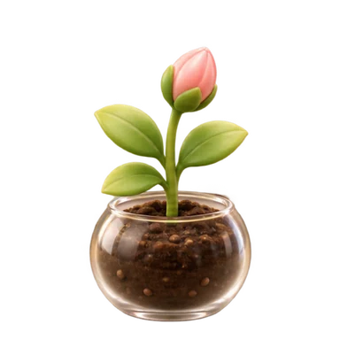
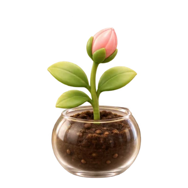

From seed to flower, in one sitting.
Scroll through a session. The panel changes the way it does on your Mac — nothing more, nothing louder.
-
01
Name the one thing
Type a task. Press Return.
 MellowReady to focusWhat are you working on?Plan several tasks…25:00Start Focus15 min25 min45 min60 min3 sessions today
MellowReady to focusWhat are you working on?Plan several tasks…25:00Start Focus15 min25 min45 min60 min3 sessions today -
02
It settles in
Your companion starts at the first quarter.

Finish the articleFocusing · 25 min19:403 sessions today -
03
It keeps growing
Every quarter adds a stage. Pausing just holds it.

Finish the articleFocusing · 25 min06:123 sessions today -
04
A flower for today
The session ends with a soft chime.
Session completeFinish the articleLater5-min Break4 sessions today